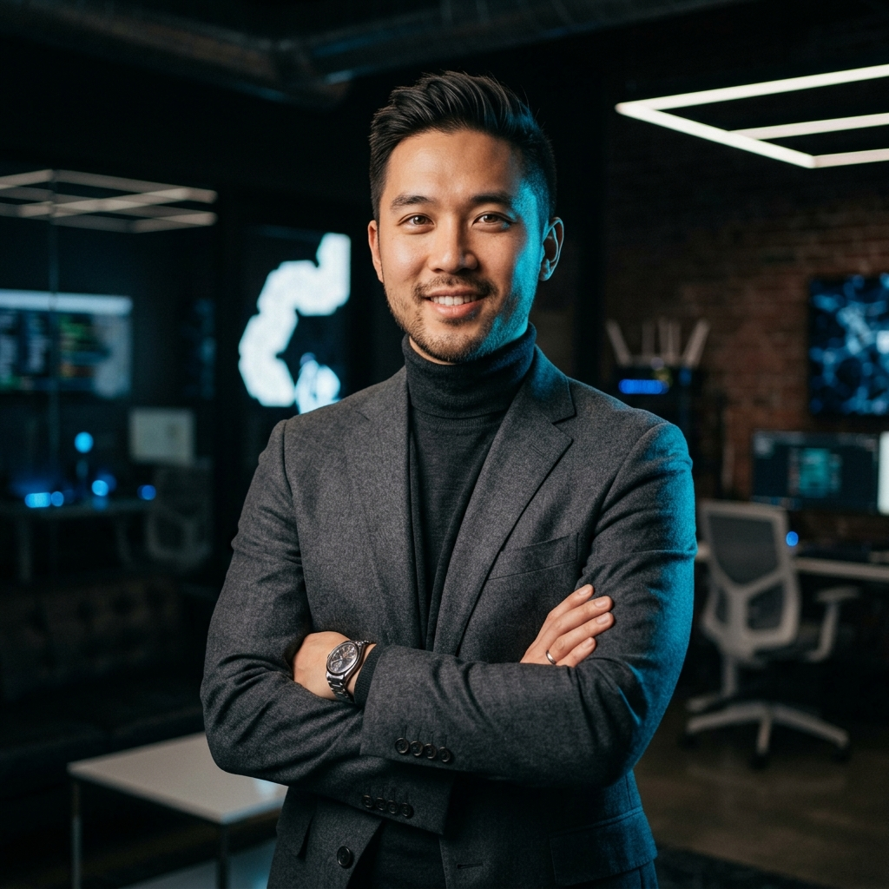
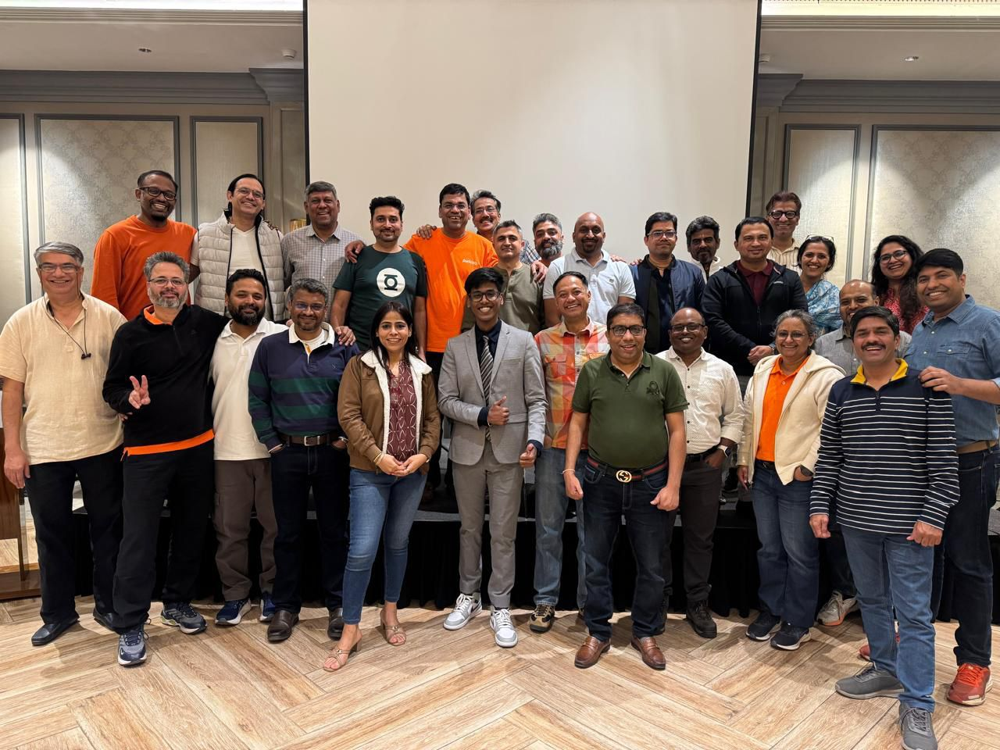
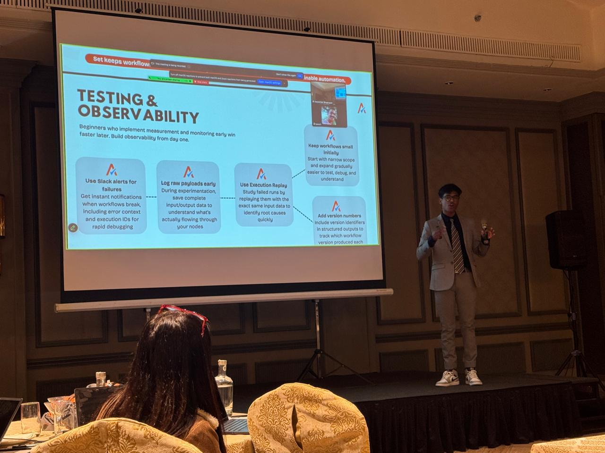

About
Building AI systems that actually ship.
Deepankar Bhadrasen · Founding Engineer · Bhopal, India
AI automation engineer. Two years. 20+ systems deployed. Fortune 500 clients. Started in college, never looked back.

Who I Am
I'm Deepankar Bhadrasen, an AI automation engineer based in Bhopal, India. I build intelligent systems that automate the workflows Fortune 500 teams rely on: sales pipelines, document intelligence, call grading, and content generation.
I've deployed over 20 AI agents and 10+ end-to-end systems across finance, e-commerce, and enterprise sales. Most of my work runs quietly in the background, replacing hours of manual labor with reliable, production-grade automation.

How I Got Here
I graduated from Symbiosis Centre for Management Studies, Pune, with a dual degree in Accounting and Finance and Marketing. In my final year, I discovered artificial intelligence and immediately saw where it was going.
In my final year I pivoted everything. I started building obsessively, managing lectures and coursework by day while delivering AI automation solutions for real clients on the side. It was a grind, but the discipline of balancing college and client work taught me how to ship under pressure. I landed my first paying client before even graduating. That was the beginning.
What started as freelance work in my final year grew into founding-team contributions at a fast-growing AI company, consulting at enterprise events, and delivering systems for Fortune 500 clients, all within two years of picking up the field.
TrueHorizon AI
In early 2025, I joined TrueHorizon AI as a Founding Engineer, one of the first members of the team and an early risk-taker in building the company from the ground up.
I built core automation infrastructure that helped TrueHorizon scale to $2.5M ARR. My work spanned system architecture, client delivery, and building repeatable frameworks that served enterprise clients reliably at scale.
Speaking and Recognition
Alongside client work, I've been invited to speak at enterprise events. I served as a guest consultant at an off-site event hosted by Avalara, a Fortune 500 company acquired by Vista Equity Partners, where I demonstrated how GTM leaders can implement AI practically and accelerate adoption across their teams.

Family, Inspiration and Ventures
My brother Anshul Namdev is the first community moderator of n8n and one of the most driven people I know. Watching him grow the n8n community while consistently pushing what was possible with AI agents has been a constant motivation for me to work harder and build bigger. He has been part of this journey from the very beginning.
Together, we co-founded Qixazow, a venture focused on turning complex AI ideas into practical, usable knowledge. The goal is straightforward: make AI automation genuinely accessible to anyone who wants to learn it seriously.
What I Use
I work across the full automation stack, from workflow orchestration to vector databases and enterprise platforms.
Work Together
If you're building something that requires serious automation, not a demo but a system that ships and scales, I'd like to hear about it.